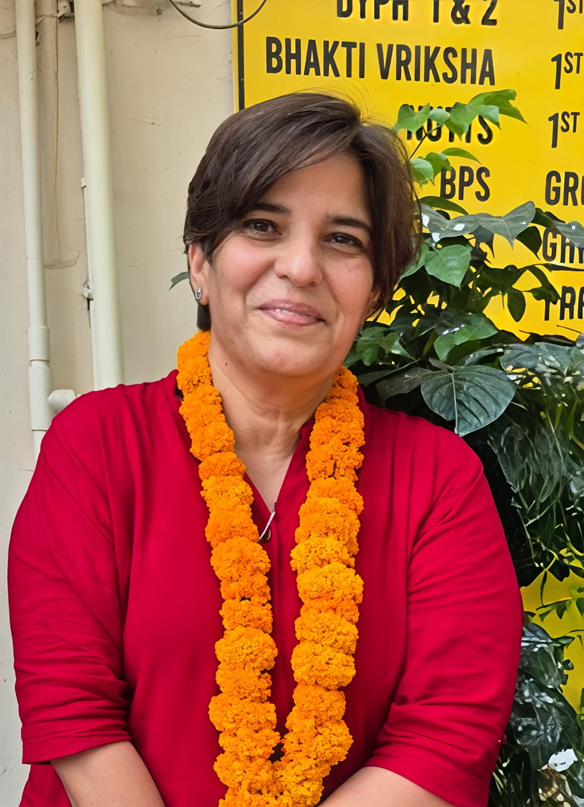

Nutan Chopra
Journalist. Media Trainer. Storyteller.
Nutan Chopra is a dedicated, resourceful and innovative mass media and training development professional with 17+ years of experience in journalism, media storytelling, teaching, training, administration, public relations and communication.
She brings together newsroom discipline, classroom mentoring and practical communication strategy to help students, institutions and organisations understand the power of clear media narratives.
Her career includes full-time reporting with Dainik Jagran and Cityplus, more than 740 print articles, lifestyle journalism, social reporting, media workshops, public relations training, guest lectures and long-standing academic work with YWCA New Delhi.
Work
Nutan's professional journey includes more than 740 print articles, lifestyle features, social reporting, media workshops, public relations training and institutional sessions.
Selected glimpses from her journalism archive, media lectures and appreciation letters are shown below.
About
Nutan has served in journalism and PR for more than 14 years in varied capacities, translating communication goals into clear editorial, academic and training outcomes.
As a full-time reporter with Dainik Jagran and Cityplus in Gurgaon from 2003 to 2007, she wrote extensively on social causes, lifestyle, public issues, malls, hospitality, culture and city life, while also covering personalities, events and film celebrities.
Since 2009, she has been associated with YWCA New Delhi as a guest lecturer in mass media, teaching undergraduate and postgraduate mass communication, advertising and public relations courses.
She has conducted workshops and guest lectures at IGNOU, British Council, India Habitat Centre, Epicentre Gurgaon, Marwah Studios, Lloyd Law College, Ansal Institute and Modern School.
Nutan holds an M.A. in Mass Communication from Guru Jambheshwar University of Science & Technology, where she secured 13th position overall, and a B.A. in Sociology (Hons.) from IGNOU.
She also completed diplomas in Journalism and Mass Media, and Marketing, Advertising and Public Relations from International Polytechnic for Women, where she secured first position.
Contact
For workshops, media training, guest lectures and professional enquiries.
© 2026 Nutan Chopra. All rights reserved.